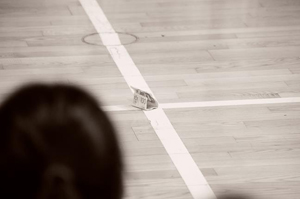
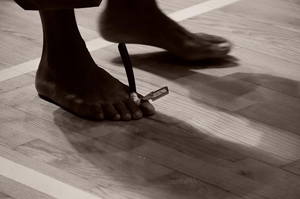
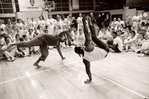
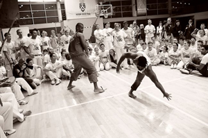

Сензала из фавел
Ждала соответствующего видеоролика, чтобы сделать пост, но, судя по всему, никто не успел заснять то потрясающее действо, которое мы наблюдали на мероприятии Semana da Cultura Brasileira 2011 в Белграде. Придется вам все описать.
История следующая. Шестой день семинара. Церемония batizado. Ничего специфического – обычный зал для тренировок, раздача поясов, всеобщая радость, демонстрация успехов и отработанных трюков Cintura Desprezada (которые в Сензале активно практикуются), фото на память, все своим чередом. И вдруг в какой-то момент в Роду входит Graduado Fumasa в обычной одежде, как с улицы, злой как черт, чуть ли не с налитыми кровью глазами, и начинает ругаться на португальском на весь зал. Ясное дело, ни о каком переводе речь не идет, из его выкриков удается лишь понять, что на вечеринке ночью кто-то обокрал его, и он разочарован в своих товарищах, которых он считал своей семьей, и если этот вор не трус, то он выйдет сюда, и так далее и так далее. Все в состоянии, которое мы назвали «ассустаду тотале» (assustado total). Скандал! Честная добрая группа Сензала, и тут такое при всех мастерах! Fumasa продолжает вопить, к нему кидается какая-то профессора прямо из батерии, кричит, что это позор, чтобы он немедленно ушел… С другого конца Роды встает Graduado Sal с возгласом „Эй, ты, это я взял твои деньги!“ И только когда на пол ложится купюра, я с облегчением понимаю, что это была потрясающая прелюдия к tico-tico. Чтобы вам было хоть немного легче представить – Fumasa – типичный молодой бразилец, который заводится с пол-оборота, носится как угорелый в Роде, играет в группе Bossa do Samba и в Рио, наверняка, живет в районе фавел. Подозреваю, что ему даже не пришлось ничего разыгрывать – судя по нему, он явно бывал в таких ситуациях и просто играл самого себя. Но выглядело это настолько правдоподобно, что, несмотря на явную абсурдность ситуации, впечатление зрителей победило разумные доводы и несколько минут все, включая молодых мастеров, на полном серьезе и в оцепенении следили за развитием событий.

События развились в яркую и задорную игру tico-tico, после чего к обоим игрокам пришло «подкрепление» в виде таких же профессоров в гоп-стоп стиле бразильских фавел. Эти ребята были уже посерьезнее – у них между пальцев ног были те самые бритвы navalhas, про которые столько легенд ходит. И нужно было видеть, как в разы более четкими и точно выверенными стали привычные удары капоэйры, как внимательно игроки следили за дистанцией, как сосредоточенно контролировали амплитуду и направление движений, как угрожающе сверкали лезвия. Помнится, кто-то в очередной дискуссии смеялся над фразой Паштиньи «капоэйра – это вкус опасности в горле». В те самые минуты, на простом шоу от бразильских пацанов, удалось ощутить лишь легкий привкус этой опасности, но даже от него в горле защекотало. Если все так и было когда-то, как они показывали, то совершенно очевидно, почему капоэйристов боялись – это очень эффективно и происходит в мгновение ока.

Еще одним номером была схватка двух капоэйристов с ножичками за поясом – в ответственный момент этот ножичек вытаскивался, и… второго уносили под аплодисменты. В заключение, конечно, была cavalaria и сменяющая ее samba de roda с главными актерами.
И шутки шутками, а ведь корни у этого всего есть. Корни настоящие, исторические, бандитские, не от хорошей человеческой жизни.

